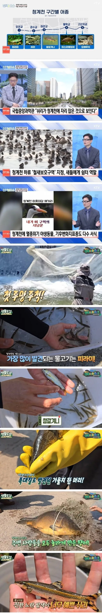

청계천 복원사업 20년 만에 쉬리 발견ㄷㄷ
쉬리는 청정 하천에서만 서식하는 어종으로, 수질 개선+생태계 회복의 증표임

청계천 복원사업 20년 만에 쉬리 발견ㄷㄷ
쉬리는 청정 하천에서만 서식하는 어종으로, 수질 개선+생태계 회복의 증표임
청개천에서 보이던 저게 쉬리였구나
난 당연히 알지이터인줄 알았는데
글쓴놈이 분란을 만들었네.
수질 개선을 한게 아니고 깨끗한 물을 계속 퍼다 흘려보내니 깨끗한 물만 있는거고 그러니 깨끗한 물에 사는 어종이 보이는거지.
돈 많이 쓰는 것도 사실이고,
돈 많이 쓴만큼, 혹은 그 이상의 편익이 있는것도 사실인데
깨끗한 물을 끌어다가 흘려보낸다는 사실이 공유되는게 싫은지 갑자기 발작하는 사람들이 좀 있네.
.
근데 정비사업 자체가 수질개선이야. 주변에서 유입되는 오수들 차단하고. 바닥 준설하고 이런일들을 하니까 수질이 개선된거니까. 단순히 맑은물만 보내다고 수질이 개선되는거 아니잖아?
인공하천인데 이런가 보면 참 신기해 ㅋㅋㅋㅋ
"우리의 소원은 통일, 꿈에도 소원은 통일... 니들이 한가롭게 그 노래를 부르고 있을 이 순간에도 고향의 내 동생들은 나무껍데기에 풀뿌리도 모자라서 이젠 흙까지 파헤쳐 먹고 있어!"
대사를 어케외우고읶냐 ㅋㅋㅋ 대단하네
아니 형님 바로 검색해다 갖다 붙임 되죠
쉬리 이쁘네
댓글봐도 벌써 ㅇㄱㄸ 유도하네.
청계천 복원은 한쪽에서 했고, 연남동 숲길은 저쪽에서 했지.
둘다 반대가 당연히 있었지만, 해놓고 나서 보니 둘다 잘했다는 생각이 들잖아?
그 자리에 있으면 해야될 일이 보이고, 그 일을 하다보면 무조건 반대하는 사람들이 생기는듯
반대를 위한 반대
정사판이 만선일세
미친놈들이.지들이 빠는 정당 아니면 ㅋㅋㅋ
업적이 훌륭해도 어떻게든 까기 바쁘네
마누라랑 데이트하러 청계천가서 멍 때리고 있음
진짜 힐링만 되던데 ㅋㅋㅋㅋ뭔 돈이 어쩌고 저쩌고
촌사람이라 청계천은 정비된 모습만 봤는데
인공천에 쟤들이 알아서 온 거냐 집어넣어서 유지되는 거냐
김용하 이 미친새끼 피딩을 얼마나 한거야
20년동안 지하수 펌프 열심히 돌린 효과가 있긴하네
어쨌든 좋은게 좋은거라구
내 중딩 쯤 당시에
다음 이종격투기 카페 같은곳에서 욕 존나했는데 ㅋㅋ
지금 그새끼들 40 후반 - 50대 쯤 됐겠네
개드립은 그나마 정치병걸린애들 거의 없는 클린존이였는데 관리자가 손을 놓은듯ㅉㅉ
깨끗한 물을 퍼다 흘리든 쉬리를 데려다 놓든 돈 잘쓰고 있구만 왜 욕하는거야 2천억 날린 여수나 욕해라
원래 천에 무단으로 자리잡은건데 뭐 어캄
구정물보다는 저게 나은거지